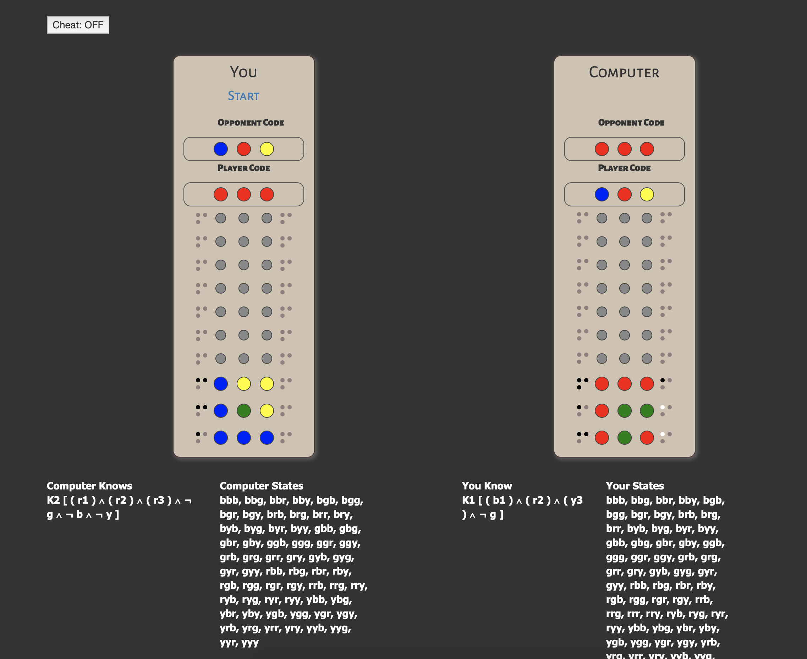

Avinash Pathapati :: Conaire O Codlatáin Lachtna :: Varun Ravi Varma
The project code is hosted on this GitHub repository. Installation and gameplay is covered in README.md
The game is currently implemented for four color pegs and three positions (three peg color code) for ease of modelling. This can easily be extended to incorporate more colors and peg positions in the backend as well as the UI.
The backend services were developed in python3. The Services consist of the following methods:
The entire application has been wrapped into a Flask web service application with the following routes matching the methods described above:
The frontend services were developed in HTML/CSS/JS. The UI consists of the following parts

The game begins with each player having 64 possible worlds (each world being a code of 3 pegs). The player and CPU set codes simultaneously, with the player entering a 3 word code comprised of the colors 'Red', 'Blue', 'Green' or 'Yellow'. With each round of guesswork, feedback that is computed by the service is provided to the frontend in terms of black or white pegs and an update to the knowledge models. The game ends when one player successfully deciphers the opponent's code.